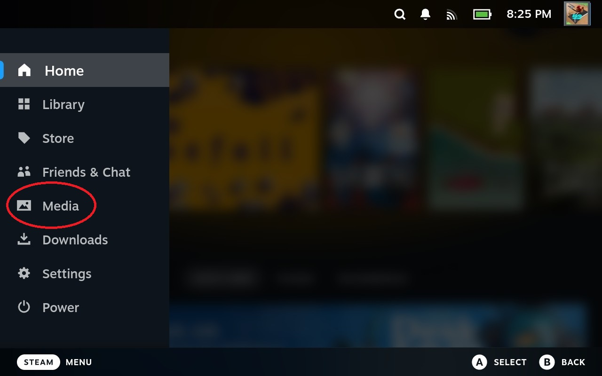

7. Media
7.1 Access the Media Menu
To access the , press the button and select .
Figure 7.1: Media within the Steam Menu.
7.2 Take Screenshots
To take a screenshot, press the button and the button.
You can press both of the buttons simultaneously, or press the button first and hold it before pressing the button.
Your screenshots are saved within the Media Menu.
7.3 Record Gameplay
Also stored in the Media Menu are .
To take video of your gameplay, go to in the Steam Menu. Then, go to .
In this menu, you have the option to change your recording mode:
- : Steam will not record your gameplay
- : Steam will automatically record your gameplay as you start playing
- : Steam will record video only after you press

Figure 7.2: The Game Recording menu.
For more information, please go to Steam Store: Game Recording.
7.4 Manage Media
You can view your screenshots and game recordings in the Media Menu.
To share your screenshots and recordings, first select the screenshot or recording.
Then, select the sharing method of your choosing:
- : this allows you to post your media to your Steam Account, either publicly or privately.
- : this allows you to copy/paste your screenshot within the Steam Deck.
- : this allows you to send the media to your Steam Mobile App.
- : this allows you to share your screenshot to a Chat with a Steam Friend.
Figure 7.3: The Sharing Media Menu.
Next Section
Back to Table of Contents